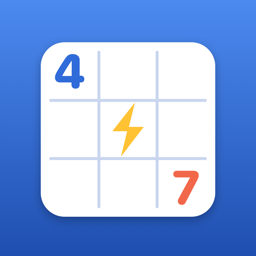

Sudoku Battle: Brain Duel
Help and contact · Yardım ve iletişim
Help
Contact us
Questions, problems or feedback: umityasarturk@gmail.com. We usually answer within two working days.
How do battles work?
You and your opponent solve the same puzzle, each whenever you like. The higher score wins; if the scores are equal, the faster time wins. Start one in Battles → Quick Battle: we match you with another player at the same difficulty and board size, as close to your rating as possible. Your rating goes up when you win and down when you lose.
How are points counted?
A clean solve is worth 100 points on Easy, 150 on Medium, 200 on Hard and 250 on Expert. A 6×6 board gives half and a 16×16 board three times as much. Each mistake costs 10 points and each hint 20.
How do the rankings and coins work?
Rankings add up the points you score in battles and in single-player games started online, this week, this month and of all time. Single-player games count for up to 1,500 points a day; battles have no limit. Each month's top 10 win coins on the 1st of the next month (300, 200, 100, then 50), and the top 10 of each year get a permanent badge. Games played offline don't count.
Coins are for the Shop (board themes, streak freezes). Every game you finish online earns a fifth of its points in coins, and a battle win adds 10 more; watch a short video at the end to double them. Three daily missions and the daily login streak (the flame) earn coins too. Coins don't affect your ranking.
How do hints work?
In single-player games, watch a short video to get a hint. In battles you have one hint and no videos. With Remove Ads you get 3 hints in every game without videos.
I subscribed to Remove Ads but still see ads
Remove Ads is a monthly subscription: no ads, 3 hints in every game without videos, and double coins while you're signed in. Open Profile → Settings → Restore Purchases while signed in to the App Store with the Apple ID you subscribed with; it works on all your devices with that Apple ID. To cancel, open Remove Ads → Manage Subscription or your Apple ID's subscriptions in iPhone Settings.
How do I delete my account?
Open Profile → Settings → Delete Account. Your account and all its data are deleted permanently, and the app's access to your Apple ID is revoked.
Someone is bothering me or has an offensive name
Open their profile, tap More (•••) and choose Block or Report. You and players you block are never matched in battles. We review every report.
I don't get notifications
Open the iPhone Settings → Notifications → Sudoku Battle and turn on Allow Notifications. You need to be signed in to receive them.
How do I change the language?
Open the iPhone Settings → Apps → Sudoku Battle → Language. The app is available in 21 languages.
Ads and privacy choices
The free version shows a small banner at the bottom of the screen, in menus and during games, never on the board. Videos only play when you choose to watch one, for a hint or extra coins. Remove Ads removes both.
In the EU, UK and Switzerland you can change your ad consent in Profile → Settings → Privacy Choices. See the Privacy Policy for what data is collected.
Yardım
Bize ulaşın
Sorularınız, sorunlarınız ve önerileriniz için: umityasarturk@gmail.com. Genellikle iki iş günü içinde yanıtlıyoruz.
Düellolar nasıl oynanır?
Siz ve rakibiniz aynı bulmacayı, her biriniz istediği zaman çözer. Yüksek puanı alan kazanır; puanlar eşitse daha hızlı bitiren kazanır. Düellolar → Hızlı Düello ile başlayın: aynı zorluk ve tahta boyutunu seçen ve reytingi size en yakın oyuncuyla eşleşirsiniz. Reytinginiz kazandıkça yükselir, kaybettikçe düşer.
Puanlar nasıl hesaplanır?
Hatasız bir çözüm Kolay'da 100, Orta'da 150, Zor'da 200, Uzman'da 250 puan değerindedir. 6×6 tahta bunun yarısını, 16×16 tahta üç katını verir. Her hata 10, her ipucu 20 puan düşürür.
Sıralama ve coin'ler nasıl çalışır?
Sıralama, düellolarda ve çevrimiçi başlatılan tek kişilik oyunlarda kazandığınız puanları bu hafta, bu ay ve tüm zamanlar için toplar. Tek kişilik oyunlar günde en fazla 1.500 puan sayılır; düellolarda sınır yoktur. Her ayın ilk 10'u bir sonraki ayın 1'inde coin kazanır (300, 200, 100, sonra 50); her yılın ilk 10'u kalıcı bir rozet alır. Çevrimdışı oyunlar sayılmaz.
Coin'ler Mağaza içindir (tahta temaları, seri dondurma). Çevrimiçi bitirdiğiniz her oyun, puanının beşte biri kadar coin kazandırır; düello galibiyeti 10 coin daha ekler, oyun sonunda kısa bir video izleyerek coin'leri 2 katına çıkarabilirsiniz. Üç günlük görev ve günlük giriş serisi (alev) de coin kazandırır. Coin'ler sıralamayı etkilemez.
İpuçları nasıl çalışır?
Tek kişilik oyunlarda kısa bir video izleyerek ipucu alırsınız. Düellolarda video olmadan 1 ipucu hakkınız vardır. Reklamları Kaldır ile her oyunda video izlemeden 3 ipucu kullanırsınız.
Reklamları Kaldır'a abone oldum ama hâlâ reklam görüyorum
Reklamları Kaldır aylık bir aboneliktir: reklam yok, her oyunda video izlemeden 3 ipucu ve giriş yapmışken 2 kat coin. Abone olduğunuz Apple Kimliği ile App Store'da oturum açıkken Profil → Ayarlar → Satın Alımları Geri Yükle'ye dokunun; abonelik aynı Apple Kimliğini kullanan tüm cihazlarınızda geçerlidir. İptal etmek için Reklamları Kaldır → Aboneliği Yönet'i ya da iPhone Ayarları'ndaki Apple Kimliği aboneliklerinizi açın.
Hesabımı nasıl silerim?
Profil → Ayarlar → Hesabı Sil'e dokunun. Hesabınız ve tüm verileri kalıcı olarak silinir; uygulamanın Apple Kimliğinize erişimi de iptal edilir.
Biri beni rahatsız ediyor ya da adı uygunsuz
Oyuncunun profilini açın, Diğer (•••) menüsünden Engelle ya da Şikâyet Et'i seçin. Engellediğiniz oyuncularla düellolarda hiç eşleşmezsiniz. Her şikâyeti inceliyoruz.
Bildirim almıyorum
iPhone Ayarlar → Bildirimler → Sudoku Battle bölümünden bildirimlere izin verin. Bildirim almak için uygulamada giriş yapmış olmanız gerekir.
Dili nasıl değiştiririm?
iPhone Ayarlar → Uygulamalar → Sudoku Battle → Dil bölümünden. Uygulama 21 dilde kullanılabilir.
Reklam ve gizlilik seçenekleri
Ücretsiz sürümde ekranın altında, menülerde ve oyun sırasında küçük bir banner reklam görünür; tahtanın üzerinde asla görünmez. Videolar yalnızca siz ipucu ya da ek coin için izlemeyi seçtiğinizde oynar. Reklamları Kaldır ikisini de kaldırır.
AB, Birleşik Krallık ve İsviçre'de reklam onayınızı Profil → Ayarlar → Gizlilik Seçenekleri bölümünden değiştirebilirsiniz. Hangi verilerin toplandığını Gizlilik Politikası'nda bulabilirsiniz.